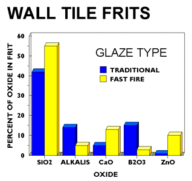
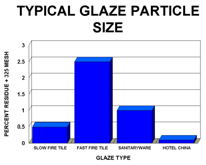

A Low Cost Tester of Glaze Melt Fluidity
A One-speed Lab or Studio Slurry Mixer
A Textbook Cone 6 Matte Glaze With Problems
Adjusting Glaze Expansion by Calculation to Solve Shivering
Alberta Slip, 20 Years of Substitution for Albany Slip
An Overview of Ceramic Stains
Are You in Control of Your Production Process?
Are Your Glazes Food Safe or are They Leachable?
Attack on Glass: Corrosion Attack Mechanisms
Ball Milling Glazes, Bodies, Engobes
Binders for Ceramic Bodies
Bringing Out the Big Guns in Craze Control: MgO (G1215U)
Can We Help You Fix a Specific Problem?
Ceramic Glazes Today
Ceramic Material Nomenclature
Ceramic Tile Clay Body Formulation
Changing Our View of Glazes
Chemistry vs. Matrix Blending to Create Glazes from Native Materials
Concentrate on One Good Glaze
Copper Red Glazes
Crazing and Bacteria: Is There a Hazard?
Crazing in Stoneware Glazes: Treating the Causes, Not the Symptoms
Creating a Non-Glaze Ceramic Slip or Engobe
Creating Your Own Budget Glaze
Crystal Glazes: Understanding the Process and Materials
Deflocculants: A Detailed Overview
Demonstrating Glaze Fit Issues to Students
Diagnosing a Casting Problem at a Sanitaryware Plant
Drying Ceramics Without Cracks
Duplicating Albany Slip
Duplicating AP Green Fireclay
Electric Hobby Kilns: What You Need to Know
Fighting the Glaze Dragon
Firing Clay Test Bars
Firing: What Happens to Ceramic Ware in a Firing Kiln
First You See It Then You Don't: Raku Glaze Stability
Fixing a glaze that does not stay in suspension
Formulating a body using clays native to your area
Formulating a Clear Glaze Compatible with Chrome-Tin Stains
Formulating a Porcelain
Formulating Ash and Native-Material Glazes
G1214M Cone 5-7 20x5 glossy transparent glaze
G1214W Cone 6 transparent glaze
G1214Z Cone 6 matte glaze
G1916M Cone 06-04 transparent glaze
Getting the Glaze Color You Want: Working With Stains
Glaze and Body Pigments and Stains in the Ceramic Tile Industry
Glaze Chemistry Basics - Formula, Analysis, Mole%, Unity
Glaze chemistry using a frit of approximate analysis
Glaze Recipes: Formulate and Make Your Own Instead
Glaze Types, Formulation and Application in the Tile Industry
Having Your Glaze Tested for Toxic Metal Release
High Gloss Glazes
Hire Us for a 3D Printing Project
How a Material Chemical Analysis is Done
How desktop INSIGHT Deals With Unity, LOI and Formula Weight
How to Find and Test Your Own Native Clays
I have always done it this way!
Inkjet Decoration of Ceramic Tiles
Is Your Fired Ware Safe?
Leaching Cone 6 Glaze Case Study
Limit Formulas and Target Formulas
Low Budget Testing of Ceramic Glazes
Make Your Own Ball Mill Stand
Making Glaze Testing Cones
Monoporosa or Single Fired Wall Tiles
Organic Matter in Clays: Detailed Overview
Outdoor Weather Resistant Ceramics
Painting Glazes Rather Than Dipping or Spraying
Particle Size Distribution of Ceramic Powders
Porcelain Tile, Vitrified Tile
Rationalizing Conflicting Opinions About Plasticity
Ravenscrag Slip is Born
Recylcing Scrap Clay
Reducing the Firing Temperature of a Glaze From Cone 10 to 6
Setting up a Clay Testing Program in Your Company or Studio
Simple Physical Testing of Clays
Single Fire Glazing
Soluble Salts in Minerals: Detailed Overview
Some Keys to Dealing With Firing Cracks
Stoneware Casting Body Recipes
Substituting Cornwall Stone
Super-Refined Terra Sigillata
The Chemistry, Physics and Manufacturing of Glaze Frits
The Effect of Glaze Fit on Fired Ware Strength
The Four Levels on Which to View Ceramic Glazes
The Majolica Earthenware Process
The Potter's Prayer
The Right Chemistry for a Cone 6 Magnesia Matte
The Trials of Being the Only Technical Person in the Club
The Whining Stops Here: A Realistic Look at Clay Bodies
Those Unlabelled Bags and Buckets
Tiles and Mosaics for Potters
Toxicity of Firebricks Used in Ovens
Trafficking in Glaze Recipes
Understanding Ceramic Materials
Understanding Ceramic Oxides
Understanding Glaze Slurry Properties
Understanding the Deflocculation Process in Slip Casting
Understanding the Terra Cotta Slip Casting Recipes In North America
Understanding Thermal Expansion in Ceramic Glazes
Unwanted Crystallization in a Cone 6 Glaze
Using Dextrin, Glycerine and CMC Gum together
Volcanic Ash
What Determines a Glaze's Firing Temperature?
What is a Mole, Checking Out the Mole
What is the Glaze Dragon?
Where do I start in understanding glazes?
Why Textbook Glazes Are So Difficult
Working with children
Ceramic Glazes Today
Description
Todd Barson of Ferro Corp. overviews the glaze formulations being using in various ceramics industry sectors. He discusses fast fire, glaze materials, development and trouble shooting.
Article
Presented at the Ceramic Manufacturing Workshop and Exhibition
Lexington, KY August 24, 1998
Todd Barson, Product Manager, Ceramic Frit, Ferro Corporation, Cleveland, OH
BARSON@ferro.com
Introduction
Process changes in the ceramic industry over the past ten years have resulted in significant changes in ceramic glaze compositions. The changes are mainly due to shorter firing cycles, new glaze and decoration application methods, and restrictions on the use of many glaze raw materials.
Manufacturing Trends
Firing Cycles
Changes in firing cycles, including the increased use of roller hearth kilns in the ceramic tile, dinnerware, and sanitaryware industries, have decreased total firing times. There is less time available to burn out organics in the body and glaze, as well as mature the body and glaze at the peak firing temperature. For example, several U.S. tile producers now have firing cycles that total less than 30 minutes cold to cold.
Application
Changes in application such as bell waterfall, airless spray, dry application, screen printing, roll printing, and disc application have dictated that changes be made in the composition as well as the suspension of ceramic glazes.
Material Restrictions
Finally, restrictions on the use of barium, lead, cadmium, zinc, or crystalline silica have led to changes in glaze composition. Soluble material in the fired glaze or waste water, as well as minimizing employee exposure to particular materials are typical reasons for restricting the use of some materials. Another factor is the cost incurred by companies to remain in compliance with EPA, OSHA, or FDA regulations. Examples include lawyer fees, consulting fees, material disposal costs, and testing by outside laboratories.
General trends
Many plants have changed body forming methods and in a sense have changed the substrate that is being glazed. If the use of pressure casting or higher tonnage presses changes the density of the body being glazed, it may necessitate a change in the burnout time in the kiln to allow the body to degas before the glaze becomes glassy. If this is not possible, the glaze may need to be reformulated to initially soften at a higher temperature.
The clays and suspension aids used in a glaze have become more critical. With the use of leadless glazes the type of clay selected can influence the amount of bubbles or defects in a glaze. The suspension is critical, especially when dipping a glaze, as the glazes do not flow or heal over as readily as lead containing glazes.
Not all changes have had negative consequences. For example, due to fast firing cycles, strong CrSn burgundy colors can be developed in glazes containing high levels of zinc oxide which was not possible in traditional firing cycles.
Industry Segments
These changes have had different effects on the ceramic industry in the various industry segments.
Ceramic tile

There is an increased use of decorating techniques in both wall and floor tile production primarily using Italian equipment. More precise application methods, such as screen and roll printing, are becoming common. Fast firing has become the norm in the U.S. rather than the exception. The engobes and base glazes are now applied by spray, airless spray, bell waterfall, or disc application methods.
Conventionally fired glazes typically contained 20-25% frit, with the balance being lower cost raw materials such as feldspar, silica, or wollastonite. Today's fast fire glazes typically contain 40-50% frit with some glazes being all-fritted. While all-fritted glazes contain 90-95% frit, a blend of several frits is commonly used in many glazes. Glaze formulations are becoming more similar to those being used by European tile producers as U.S. tile producers emulate both Italian production techniques and designs. In addition, the use of an engobe has become a necessity in many plants to produce higher quality glaze surfaces or to maintain glaze quality.
The frits being used today remain leadless but have very low levels of boron and alkalis with much higher levels of calcium and zinc when compared with traditional fire frits. Typical frits used by the fast-fire wall and floor tile industry produce excellent glazes when used all fritted. Clear glossy and opaque glossy frits are the dominant types of frits used in fast fire glazes in both the wall and floor tile industries. Zirconium silicate remains the dominant opacifier but there remains some debate whether optimum glaze surfaces are produced using opacified frits with smelted-in zircon, or by mill added zirconium silicate opacifier to non-opacified glazes.
Sanitaryware
For sanitaryware, first fire glazes remain feldspar or nepheline syenite based. The industry is seeing an increase, however, in the use of frit in first fire glazes to decrease glaze pitting and to provide the ability to heal over glaze defects. There are several reasons for the change. Sanitaryware firing cycles have become faster. At the same time there has been a decrease in the use of zinc oxide or barium carbonate in glazes in the U.S.
Refire glazes have changed also. The U.S. sanitaryware industry has eliminated the use of lead from refire glazes. Typical refire glazes use leadless frits in combination with feldspar or nepheline syenite. While sanitaryware glazes are mainly applied by spray application, the use of robot spray equipment has become commonplace for high volume units.
Dinnerware
Dinnerware glazes tend to be plant specific and are generally applied by spray application whether single fire or two fire. Hollowware is glazed using spray or dipping applications.
Hotel China
There has been some shift by the U.S. industry to single-fire leadless glazes, allowing a switch from highly fritted lead containing glazes to partially-fritted leadless glazes containing a high percentage of raw materials. This has been made possible by the higher firing temperature of the single fire operations.
While there are some leadless two-fire glazes in use, lead glazes continue to be used by some hotel china producers. The glazes, however, have extremely low lead release levels well below the levels required by the FDA.
The popularity of intensely colored glazes in recent years has led to less use of underglaze decorations. The single firing trend has also increased the use of overglaze or inglaze decorations needing a second deco fire instead of underglaze decoration.
Fine China
While lead glazes continue to be used by most fine china producers today, most producers have introduced lead-free products and are working to convert other products to lead-free glaze systems.
Casual China
In the U.S., the major producers of casual china have single fire processes. The glazes are formulated in house but generally contain high levels of raw materials.
Giftware
The giftware industry has also moved to leadless glaze systems in most of the U.S. There has been a shift in application techniques in order to make the transition to leadless glazes. While the lead glazes were normally applied by dipping, the use of spray application or a combination of dip and spray application are now common with the switch to leadless glazes.
While higher temperature glazes tend to be feldspar based, at lower temperatures the glazes are highly fritted, using a combination of several leadless frits and raw materials.
High Voltage Porcelain
Unlike the other industry segments, glazes in the high voltage porcelain industry have changed little in the past 10 years and remain feldspar or nepheline syenite based. Glazes are generally applied by dipping or spraying.
Glaze Materials
As reaction times, melting points, temperatures, and substrates have changed in the whitewares industry, the materials used in glaze formulation have also changed over time.
Silica is a major glaze component and is added in many forms such as quartz, feldspar, or wollastonite into a glaze. Silica acts as a glass former and is used to control thermal expansion and help impart acid resistance to the glaze.
Clay such as kaolin, ball clay, china clay, or bentonite continues to be the primary suspending agent used in ceramic glazes. Consideration of the rheology characteristics needed by the application method as well as physical properties such as glaze drying time or shrinkage characteristics need to be taken into account when selecting the clay to be used in a ceramic glaze. For example, the glazing of wet column brick requires glazes with up to 25% clay, while in general only 5-10% clay is needed for glaze suspension.
Feldspathic minerals, such as soda and potash feldspar and nepheline syenite, continue to be some of the most commonly used raw materials. These materials are a major source of alkali fluxes in a glaze as well as silica. Feldspar can be used as either a flux or refractory material in a glaze depending on the firing temperature.
Alumina is normally added as calcined alumina or alumina trihydrate, although both clay and feldpars are sources of alumina in the glaze. The alumina is used to improve the scratch resistance or abrasion resistance of the glaze but also influences the gloss level.
Alkaline earth oxide materials such as calcium carbonate, wollastonite, and zinc oxide are generally added as raw materials. Other alkaline earth oxides such as lead oxide, strontium oxide, barium oxide, and magnesium oxide are more typically added in a fritted form. The alkaline earth oxides are advantageous because they provide fluxing action without having a major effect on glaze thermal expansion.
Zirconium silicate is the major opacifier used in ceramic glazes. However, tin oxide is used by some manufacturers particularly if chrome-tin pigments are being used in the glaze. It is also becoming more common to use zircon opacified frits to provide some or all of the zirconium silicate needed in a glaze. This is especially true in fast firing cycles where the use of a high percentage of a refractory material (such as zirconium silicate) is not desirable.
Ceramic frits play a major part in glaze formulation. Frits continue to be a source of normally highly soluble oxides such as soda, potassium, or boron. As firing cycles have grown shorter, however, materials such as zircon, calcium, alumina, or barium are commonly added in the fritted form. In addition, frit producers are able to tailor frit formulations for particular uses and processes.
Glaze Development
A properly designed and processed glaze will enhance the appearance, quality, and usefulness of ceramic ware. That the selection of glaze composition is fundamentally important to glaze success needs no emphasis. Success comes largely through and understanding and control of glaze defects.
The actual choice of raw materials is also important. Glazes of identical chemical oxide composition, but compounded from different clays, feldspars, or frits, for example may behave differently. The compositional diagnosis of glazes must therefore direct attention to the batch composition, as well as the chemical nature.
Glazes should be fully evaluated before implementation not after they are put into production. The evaluation should be part of the selection process when picking the optimum glaze formula. It should always be remembered that a fired glaze represents a composition and a manufacturing process, each being vital to success. Establish both the acceptable ranges and limitations of the glaze system. Rheology is now even more critical when applying the glaze.
When developing new glazes they should be tested using sensitive colors such as chrome-tins and not just white or clear glazes. The glazes should be tested for fit over a range of applications and firing temperatures. Test glazes over a range of application thicknesses and observe shifts in surface quality, color, clarity, fit, and gloss.
The glaze fit is affected not only by the relative coefficients of thermal expansion of the glaze and body, but also the amount of glaze/body interaction and the thickness of the glaze layer. Glaze elasticity, which can be increased by the use of lead or zinc in the glaze, can also improve the glaze fit.
Fine tuning of glazes may also include adjusting the suspension system of the glaze. In the U.S. it is common to use ball clay or kaolin to suspend the glaze but it is becoming more common to use suspension modifiers or additives such as bentonite, CMC, or even starch.
Don't assume that one glaze composition will be suitable for all colors and effects needed. A plant may need a clear system for dark colors like cobalt blue or black and an opaque system for white or pastel colors. Many plants today also need semi-opaque glazes to achieve some fired glaze effects.
When comparing glaze costs, take into account the total glaze cost per piece that is put into the box. Factor in the application weight per piece, the glaze cost per pound, and the quality achieved both in percent quality and fired appearance. For example a glaze that is twice as expensive per pound as another but is used at half the application weight is actually the same cost per piece as the less costly glaze. The fired appearance and overall quality should decide which of the two glazes is actually the least costly per fired piece in the box.
Tips

- Test new glaze systems using sensitive colors ( such as chrome-tin or chrome-zinc-iron brown pigments ) and not just white or clear glazes if these colors are commonly or even sporadically being produced.
- Test new glazes over a temperature range and application range using several kilns.
- Know the range of a glaze for application and firing before introducing the glaze into production. Set production specifications to a realistic level taking into account the current variation in application and firing attainable within the plant.
- Determine the optimum particle size of the glaze. This will vary with glaze composition. For example, the optimum particle size for a highly fritted fast fire wall tile glaze is normally significantly higher than a fast fire glaze that contains only 40-50% frit and contains a much higher level of raw materials.
- Fully evaluate glaze systems before implementation into the plant. All glazes should be evaluated for:
Resistance to chemical attack
Proper fit
Physical properties such as abrasion or slip resistance
Firing range
Compatibility with overglazes, underglazes, or engobes
Affect on planarity or warpage of body
Rheology over time - Always fire a standard when evaluating new glazes. Never rely on a piece from an earlier fire as a standard when evaluating new glaze compositions for color or glaze appearance.
Implementation
Consistent Formulation
Once glazes have been formulated, it is important that the formula be produced consistently in the production process. Batching scales need to be accurate. While plus or minus 1 lb. is not critical for a material used at a 2000 lb. level, it is very critical for a glaze material used only at a 5-pound level.
Consistent Preparation
Glazes are still typically prepared by wet ball milling in most plants. Care needs to be taken to insure that the glaze is delivered to the production line at the same particle size, specific gravity, and viscosity and that the specific gravity and viscosity are maintained within desired parameters over time during application. While the same particle size or percent solids are not necessarily the same for a clear versus a white glaze, once parameters are established they need to be adequately controlled.
Glaze Problem Solving
Since evaluation of the glaze surface often can determine whether a fired product is acceptable for sale, there is a tendency to conclude that glaze defects are always caused by the glaze itself and can be cured by a change in glaze formulation. First you need to be sure that you are addressing a glaze problem and not a symptom caused by another process problem. Frequently, we attempt to cure glaze defects by reformulating the glaze before determining the actual cause of the defect. While a change in formulation may cure some glaze defects, it may not eliminate the actual problem or be the optimum or most cost effective solution.
The first step, as in solving any problem, involves gathering information. When a glaze or color problem occurs, it is often helpful to look at the performance of other glazes and colors being run in production for clues to solving the problem. The evaluation of both similar and dissimilar glazes can help to determine whether a problem is being caused by poor formulation, material variation, application, firing, or process changes.
For example:
- Are other glazes or colors experiencing the same problem?
- Are other lots of the same glaze performing well? This may point to a batching or material problem.
- Are similar or dissimilar glaze compositions performing well?
- Does the glaze vary in appearance across the kiln profile? If so this may point to a firing problem or if not this may point to a glaze formulation or application problem.
The determination that one glaze composition works satisfactorily while another does not, may be all that is needed to solve some glaze problems. Still, the comparison of the initial fusion, coefficient of thermal expansion, fusion flow, and raw material composition of various glazes used in production may help to both determine the cause of a defect and to help solve current and future glaze problems.
Production Process
Look for possible changes in the production process that may be a cause of glaze defects.
These include:
- Changes in the kiln push rate, temperature, kiln loading density, or atmosphere (This includes both bisque and glost kilns). Don't overlook changes made at the burnout temperature as well as the peak temperature.
- Changes in product mix that may influence kiln atmosphere or loading.
- Changes in body or glaze raw materials such as suppliers, particle size, or organic content.
- Changes in milling time or mixing time of a glaze.
- Changes in the specific gravity or viscosity of a glaze.
- Changes in glaze application thickness or specifications?
Defect Causes
Some major causes of glaze defects include:
- Raw material changes or contaminants in the body or glaze
- Batching errors
- Changes in glaze preparation
- Pressing or forming changes in the body
- Raw material variation
- Poor drying of glazed ware before firing
- Improper glost or bisque firing
- Improper glaze or body formulation
Clues
Examination of the fired piece itself may reveal clues as to the cause of a defect. Using even a low power microscope may show whether the defect occurs at or below the glaze surface or whether a contaminant is the cause of the defect. Changes in the absorption or fired color of the body may show that raw material or firing changes have occurred which may have affected the glaze.
Often changes will occur which the ceramic manufacturer has no control over. Identifying when these changes occur can still help in the prevention and solution of glaze problems. Many plants expect the application of a thin layer of glaze to cover up or make up for plant problems which may include poor mixing, forming, bisque or glost firing, or glaze application. The key is to optimize the entire production process which includes the proper formulation, production, application, and firing of the glaze.
More Changes
The U.S. ceramic industry continues to be in a state of transition as it adapts to meet both the demands of customers and increased worldwide competition. As both ceramic processes and products change, there will be a need for ceramic glaze compositions to adapt also to meet the demands of today's ceramic manufacturer.
|
PHYSICAL PROPERIES OF IMPORTANT GLAZE OXIDES | ||||
|
OXIDE |
MOLECULAR |
SPECIFIC |
MELTING POINT |
COEFFICIENT OF |
|
Al2O3 |
102 |
4 |
2045 |
1.5 |
|
B2O3 |
69.6 |
1.8 |
460 |
0.6 |
|
BaO |
153.4 |
5.7 |
1923 |
3.6 |
|
CaO |
56.1 |
3.3 |
2580 |
4.5 |
|
K2O |
94.2 |
2.3 |
350 |
9 |
|
Li2O |
29.9 |
2 |
445 |
11.1 |
|
MgO |
40.3 |
3.6 |
2800 |
0.6 |
|
Na2O |
62 |
2.3 |
460 |
11.4 |
|
PbO |
223.2 |
9.5 |
888 |
2.25 |
|
SiO2 |
60.08 |
1.5 |
1713 |
0.8 |
|
SrO |
103.6 |
4.7 |
2430 |
4.2 * * |
|
ZnO |
81.4 |
5.5 |
1975 |
3 |
|
ZrO2 |
123.2 |
5.6 |
2715 |
2.1 * * * |
|
Handbook of Chemistry and Physics, 55th Edition, 1974-1975, Ed. Robert C. Weast, Ph.D., CRC Press | ||||
Acknowledgment
Special thanks to Dr. Ralston Russell, Jr., Professor Emeritus, The Ohio State University.
Bibliography
Barson, T., "Frit: The Engineered Material," Ceramic Engineering & Science Proceedings, Volume 18, issue 2, 1997.
Meinssen, K., "Ceramic Glaze Materials-The Top Ten List," Ceramic Engineering & Science
Proceedings, Volume 18, issue 2, 1997.
Related Information
Links
| Projects |
Firing Schedules
|
| Troubles |
Glaze Blisters
Questions and suggestions to help you reason out the real cause of ceramic glaze blistering and bubbling problems and work out a solution |
| Glossary |
Fast Fire Glazes
Industrial ceramics are fired very quickly and require minimal micro bubbles and zero pinholes and blisters. Fast fire late melting glazes accomplish that. |
 PayPal | No tracking, No ads, No paywall, No transient content! Just organized, concise information constantly updated and improved. Was this helpful? Consider supporting me. |
By Todd Barson
Got a Question?
Buy me a coffee and we can talk 

https://digitalfire.com, All Rights Reserved
Privacy Policy